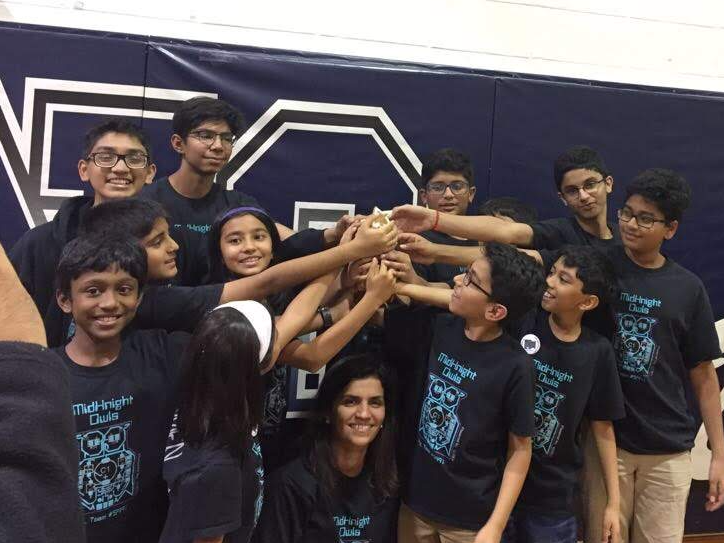

Project Code

Two years ago, I began teaching programming concepts to young students at the Trenton library. Project Code, as we call it now, has now expanded and become a very significant and core part of my life.
In my first session of 12 classes, I realized the pure joy I receive when helping students reach their “aha” moments. It doesn’t reward me with the transactional happiness that we get from doing “work”, rather, for that one hour every Saturday, it puts me in an overall state of immediate bliss seeing the young minds discover themselves.
Project Code has become the project I am most passionate about for two reasons. First, it has a huge impact on students from all across the state. Second, it is where I go to escape from the stresses of daily life.
Since my first class two years ago, I have grown Project Code to 5 libraries in New Jersey, where we have run the program multiple times (in sessions of 12 weeks) because of more and more parents who find value in the work that we are doing. I continue to teach one class every Saturday, and now, I have begun delegating libraries to generous volunteers by providing them with the training necessary to run a chapter, involving the actual programming involved as well as the process of reaching out to a library and convincing them to run our program.
Learn more about Project CodeIn the summer of 2017, I directed a camp to give students from ages 6-10 an introduction to lego robotics. I ran two three-week half day sessions, in which I wrote the curriculum for the camps, managed the teachers (while sometimes teaching myself), and recruited new students to join the camps.
Last year, I was the head coach for a middle school robotics team, which is usually led by adults. I coached 8 students and encouraged strong core values such as teamwork. With my efforts, the team transformed from a divided group of fighting teenagers to 8 united kids who came to love working with each other. I led this transformation by having team bonding activities where they had to work with each other to complete a mini-challenge and by encouraging them to discuss positive aspects about their team members and what they did well at the end of each meeting. As a unit, the team accomplished 6 different missions across the robot board, created a project on water purification of a dangerous form of Chromium VI, and most significantly, earned a “Core Values” award because of their internalization of my lessons.
Because of my experience watching the students grow over the course of the three months, I am coaching another robotics team this year in hopes of accomplishing similar results.